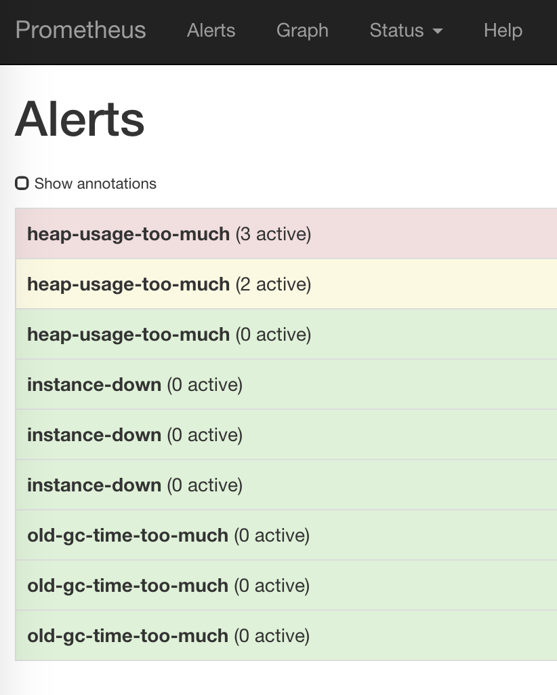
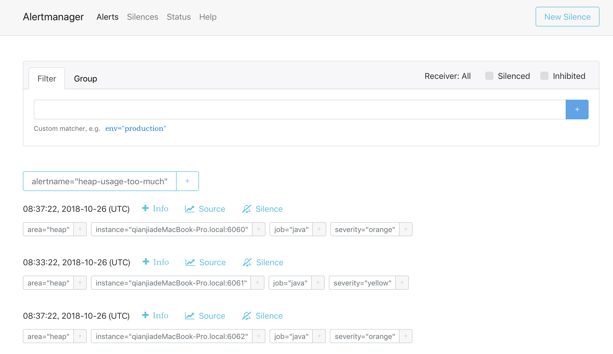

在前一篇文章中提到了如何使用Prometheus+Grafana来监控JVM。本文介绍如何使用Prometheus+Alertmanager来对JVM的某些情况作出告警。
本文所提到的脚本可以在这里下载。
摘要
用到的工具：
- Docker，本文大量使用了Docker来启动各个应用。
- Prometheus，负责抓取/存储指标信息，并提供查询功能，本文重点使用它的告警功能。
- Grafana，负责数据可视化（本文重点不在于此，只是为了让读者能够直观地看到异常指标）。
- Alertmanager，负责将告警通知给相关人员。
- JMX exporter，提供JMX中和JVM相关的metrics。
- Tomcat，用来模拟一个Java应用。
先讲一下大致步骤：
- 利用JMX exporter，在Java进程内启动一个小型的Http server
- 配置Prometheus抓取那个Http server提供的metrics。
- 配置Prometheus的告警触发规则
- heap使用超过最大上限的50%、80%、90%
- instance down机时间超过30秒、1分钟、5分钟
- old gc时间在最近5分钟里超过50%、80%
- 配置Grafana连接Prometheus，配置Dashboard。
- 配置Alertmanager的告警通知规则
告警的大致过程如下：
- Prometheus根据告警触发规则查看是否触发告警，如果是，就将告警信息发送给Alertmanager。
- Alertmanager收到告警信息后，决定是否发送通知，如果是，则决定发送给谁。
第一步：启动几个Java应用
1) 新建一个目录，名字叫做prom-jvm-demo。
2) 下载JMX exporter到这个目录。
3) 新建一个文件simple-config.yml内容如下：
---
lowercaseOutputLabelNames: true
lowercaseOutputName: true
whitelistObjectNames: ["java.lang:type=OperatingSystem"]
rules:
- pattern: 'java.lang<type=OperatingSystem><>((?!process_cpu_time)\w+):'
name: os_$1
type: GAUGE
attrNameSnakeCase: true4) 运行以下命令启动3个Tomcat，记得把<path-to-prom-jvm-demo>替换成正确的路径（这里故意把-Xmx和-Xms设置的很小，以触发告警条件）：
docker run -d \
--name tomcat-1 \
-v <path-to-prom-jvm-demo>:/jmx-exporter \
-e CATALINA_OPTS="-Xms32m -Xmx32m -javaagent:/jmx-exporter/jmx_prometheus_javaagent-0.3.1.jar=6060:/jmx-exporter/simple-config.yml" \
-p 6060:6060 \
-p 8080:8080 \
tomcat:8.5-alpine
docker run -d \
--name tomcat-2 \
-v <path-to-prom-jvm-demo>:/jmx-exporter \
-e CATALINA_OPTS="-Xms32m -Xmx32m -javaagent:/jmx-exporter/jmx_prometheus_javaagent-0.3.1.jar=6060:/jmx-exporter/simple-config.yml" \
-p 6061:6060 \
-p 8081:8080 \
tomcat:8.5-alpine
docker run -d \
--name tomcat-3 \
-v <path-to-prom-jvm-demo>:/jmx-exporter \
-e CATALINA_OPTS="-Xms32m -Xmx32m -javaagent:/jmx-exporter/jmx_prometheus_javaagent-0.3.1.jar=6060:/jmx-exporter/simple-config.yml" \
-p 6062:6060 \
-p 8082:8080 \
tomcat:8.5-alpine5) 访问http://localhost:8080|8081|8082看看Tomcat是否启动成功。
6) 访问对应的http://localhost:6060|6061|6062看看JMX exporter提供的metrics。
备注：这里提供的simple-config.yml仅仅提供了JVM的信息，更复杂的配置请参考JMX exporter文档。
第二步：启动Prometheus
1) 在之前新建目录prom-jvm-demo，新建一个文件prom-jmx.yml，内容如下：
scrape_configs:
- job_name: 'java'
scrape_interval: 30s
static_configs:
- targets:
- '<host-ip>:6060'
- '<host-ip>:6061'
- '<host-ip>:6062'
# alertmanager的地址
alerting:
alertmanagers:
- static_configs:
- targets:
- '<host-ip>:9093'
# 读取告警触发条件规则
rule_files:
- '/prometheus-config/prom-alert-rules.yml'2) 新建文件prom-alert-rules.yml，该文件是告警触发规则：
# severity按严重程度由高到低：red、orange、yello、blue
groups:
- name: jvm-alerting
rules:
# down了超过30秒
- alert: instance-down
expr: up == 0
for: 30s
labels:
severity: yellow
annotations:
summary: "Instance {{ $labels.instance }} down"
description: "{{ $labels.instance }} of job {{ $labels.job }} has been down for more than 30 seconds."
# down了超过1分钟
- alert: instance-down
expr: up == 0
for: 1m
labels:
severity: orange
annotations:
summary: "Instance {{ $labels.instance }} down"
description: "{{ $labels.instance }} of job {{ $labels.job }} has been down for more than 1 minutes."
# down了超过5分钟
- alert: instance-down
expr: up == 0
for: 5m
labels:
severity: red
annotations:
summary: "Instance {{ $labels.instance }} down"
description: "{{ $labels.instance }} of job {{ $labels.job }} has been down for more than 5 minutes."
# 堆空间使用超过50%
- alert: heap-usage-too-much
expr: jvm_memory_bytes_used{job="java", area="heap"} / jvm_memory_bytes_max * 100 > 50
for: 1m
labels:
severity: yellow
annotations:
summary: "JVM Instance {{ $labels.instance }} memory usage > 50%"
description: "{{ $labels.instance }} of job {{ $labels.job }} has been in status [heap usage > 50%] for more than 1 minutes. current usage ({{ $value }}%)"
# 堆空间使用超过80%
- alert: heap-usage-too-much
expr: jvm_memory_bytes_used{job="java", area="heap"} / jvm_memory_bytes_max * 100 > 80
for: 1m
labels:
severity: orange
annotations:
summary: "JVM Instance {{ $labels.instance }} memory usage > 80%"
description: "{{ $labels.instance }} of job {{ $labels.job }} has been in status [heap usage > 80%] for more than 1 minutes. current usage ({{ $value }}%)"
# 堆空间使用超过90%
- alert: heap-usage-too-much
expr: jvm_memory_bytes_used{job="java", area="heap"} / jvm_memory_bytes_max * 100 > 90
for: 1m
labels:
severity: red
annotations:
summary: "JVM Instance {{ $labels.instance }} memory usage > 90%"
description: "{{ $labels.instance }} of job {{ $labels.job }} has been in status [heap usage > 90%] for more than 1 minutes. current usage ({{ $value }}%)"
# 在5分钟里，Old GC花费时间超过30%
- alert: old-gc-time-too-much
expr: increase(jvm_gc_collection_seconds_sum{gc="PS MarkSweep"}[5m]) > 5 * 60 * 0.3
for: 5m
labels:
severity: yellow
annotations:
summary: "JVM Instance {{ $labels.instance }} Old GC time > 30% running time"
description: "{{ $labels.instance }} of job {{ $labels.job }} has been in status [Old GC time > 30% running time] for more than 5 minutes. current seconds ({{ $value }}%)"
# 在5分钟里，Old GC花费时间超过50%
- alert: old-gc-time-too-much
expr: increase(jvm_gc_collection_seconds_sum{gc="PS MarkSweep"}[5m]) > 5 * 60 * 0.5
for: 5m
labels:
severity: orange
annotations:
summary: "JVM Instance {{ $labels.instance }} Old GC time > 50% running time"
description: "{{ $labels.instance }} of job {{ $labels.job }} has been in status [Old GC time > 50% running time] for more than 5 minutes. current seconds ({{ $value }}%)"
# 在5分钟里，Old GC花费时间超过80%
- alert: old-gc-time-too-much
expr: increase(jvm_gc_collection_seconds_sum{gc="PS MarkSweep"}[5m]) > 5 * 60 * 0.8
for: 5m
labels:
severity: red
annotations:
summary: "JVM Instance {{ $labels.instance }} Old GC time > 80% running time"
description: "{{ $labels.instance }} of job {{ $labels.job }} has been in status [Old GC time > 80% running time] for more than 5 minutes. current seconds ({{ $value }}%)"3) 启动Prometheus：
docker run -d \
--name=prometheus \
-p 9090:9090 \
-v <path-to-prom-jvm-demo>:/prometheus-config \
prom/prometheus --config.file=/prometheus-config/prom-jmx.yml4) 访问http://localhost:9090/alerts应该能看到之前配置的告警规则：

如果没有看到三个instance，那么等一会儿再试。
第三步：配置Grafana
第四步：启动Alertmanager
1) 新建一个文件alertmanager-config.yml：
global:
smtp_smarthost: '<smtp.host:ip>'
smtp_from: '<from>'
smtp_auth_username: '<username>'
smtp_auth_password: '<password>'
# The directory from which notification templates are read.
templates:
- '/alertmanager-config/*.tmpl'
# The root route on which each incoming alert enters.
route:
# The labels by which incoming alerts are grouped together. For example,
# multiple alerts coming in for cluster=A and alertname=LatencyHigh would
# be batched into a single group.
group_by: ['alertname', 'instance']
# When a new group of alerts is created by an incoming alert, wait at
# least 'group_wait' to send the initial notification.
# This way ensures that you get multiple alerts for the same group that start
# firing shortly after another are batched together on the first
# notification.
group_wait: 30s
# When the first notification was sent, wait 'group_interval' to send a batch
# of new alerts that started firing for that group.
group_interval: 5m
# If an alert has successfully been sent, wait 'repeat_interval' to
# resend them.
repeat_interval: 3h
# A default receiver
receiver: "user-a"
# Inhibition rules allow to mute a set of alerts given that another alert is
# firing.
# We use this to mute any warning-level notifications if the same alert is
# already critical.
inhibit_rules:
- source_match:
severity: 'red'
target_match_re:
severity: ^(blue|yellow|orange)$
# Apply inhibition if the alertname and instance is the same.
equal: ['alertname', 'instance']
- source_match:
severity: 'orange'
target_match_re:
severity: ^(blue|yellow)$
# Apply inhibition if the alertname and instance is the same.
equal: ['alertname', 'instance']
- source_match:
severity: 'yellow'
target_match_re:
severity: ^(blue)$
# Apply inhibition if the alertname and instance is the same.
equal: ['alertname', 'instance']
receivers:
- name: 'user-a'
email_configs:
- to: '<user-a@domain.com>'修改里面关于smtp_*的部分和最下面user-a的邮箱地址。
备注：因为国内邮箱几乎都不支持TLS，而Alertmanager目前又不支持SSL，因此请使用Gmail或其他支持TLS的邮箱来发送告警邮件，见这个issue，这个问题已经修复，下面是阿里云企业邮箱的配置例子：
smtp_smarthost: 'smtp.qiye.aliyun.com:465'
smtp_hello: 'company.com'
smtp_from: 'username@company.com'
smtp_auth_username: 'username@company.com'
smtp_auth_password: password
smtp_require_tls: false2) 新建文件alert-template.tmpl，这个是邮件内容模板：
{{ define "email.default.html" }}
<h2>Summary</h2>
<p>{{ .CommonAnnotations.summary }}</p>
<h2>Description</h2>
<p>{{ .CommonAnnotations.description }}</p>
{{ end}}3） 运行下列命令启动：
docker run -d \
--name=alertmanager \
-v <path-to-prom-jvm-demo>:/alertmanager-config \
-p 9093:9093 \
prom/alertmanager:master --config.file=/alertmanager-config/alertmanager-config.yml4) 访问http://localhost:9093，看看有没有收到Prometheus发送过来的告警(如果没有看到稍等一下)：

第五步：等待邮件
等待一会儿（最多5分钟）看看是否收到邮件。如果没有收到，检查配置是否正确，或者docker logs alertmanager看看alertmanager的日志，一般来说都是邮箱配置错误导致。